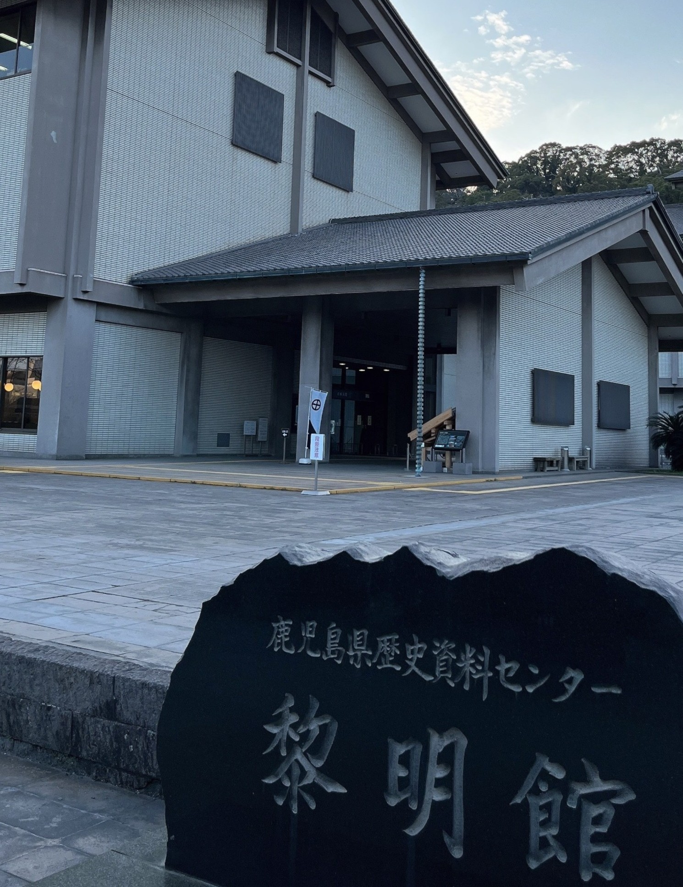
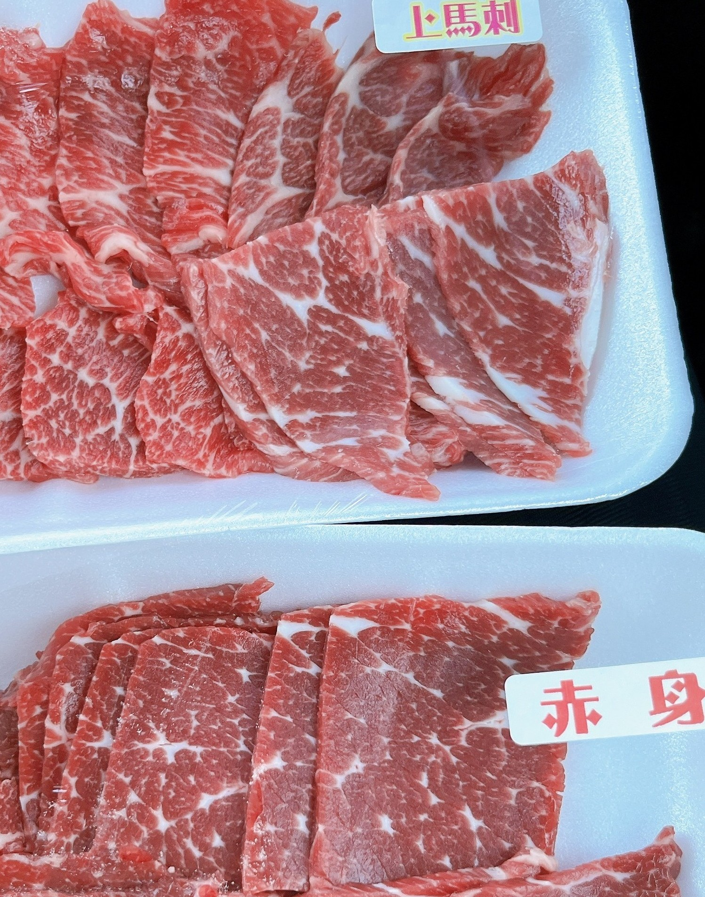
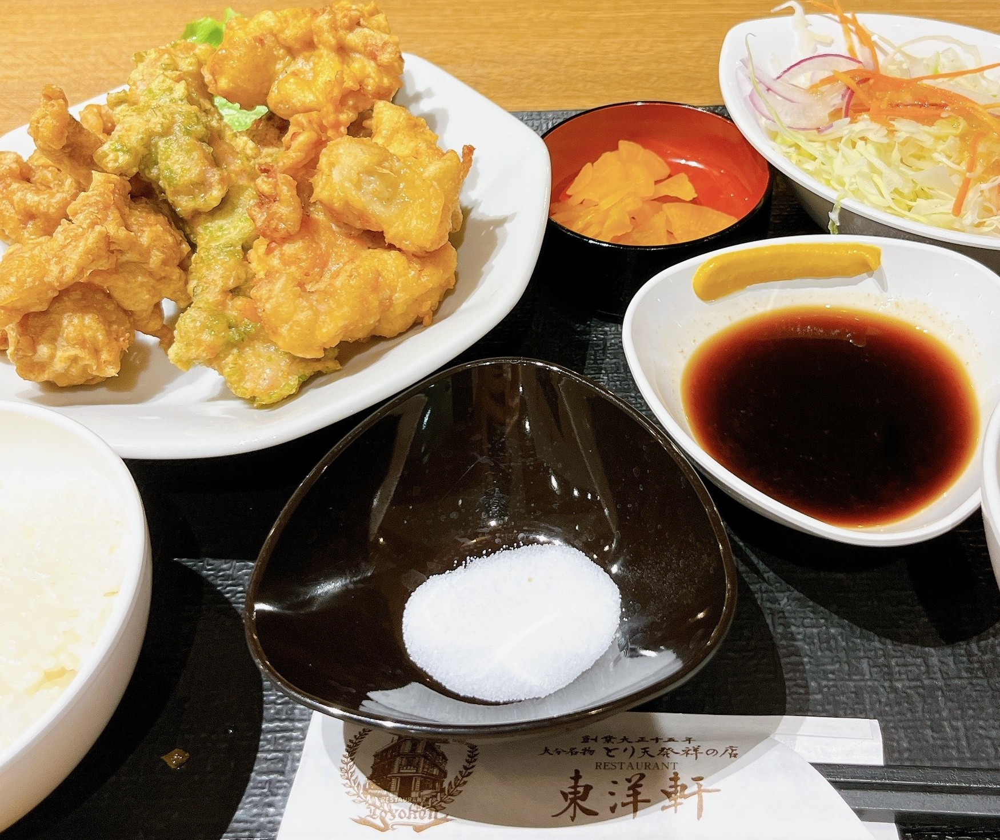

～福岡県&鹿児島県&熊本県&大分県編～
2023年3月11日～15日に九州4県を旅行した記事になります！
▶ 今回の旅の目次
筥崎宮
桜井神社
太宰府天満宮
厨
黒豚の館
霧島神宮
鹿児島神宮
鹿児島県歴史資料センター 黎明館

鹿児島県歴史・美術センター 黎明館
営業時間：9:00～18:00
定休日：月曜日(祝日の場合は翌日)、毎月25日(土日の場合は開館)、12月31日～1月2日
駐車場：あり
TEL：099-222-5100
住所：鹿児島県鹿児島市城山町7-2
URL： 鹿児島県観光サイト「かごしまの旅」
熊本城
加藤神社
阿蘇神社
岩永商店

よかよか亭あか牛館 宮地店

よかよか亭あか牛館 宮地店
営業時間：11:00～20:00
定休日：なし
予約可否：予約可
駐車場：あり
TEL：050-5571-8275
住所：熊本県阿蘇市一の宮町宮地2395-1
URL： 食べログで見る
大分縣護國神社
春日神社
レストラン東洋軒 トキハ別府店

レストラン東洋軒 トキハ別府店
営業時間：10;00～21:00
定休日：なし
予約可否：予約不可
駐車場：あり
TEL：0977-23-3333
住所：大分県別府市北浜2-9-1 B1F
URL： 食べログで見る
宇佐神宮
中津城
来々軒

来々軒 からあげ天下とり
営業時間：11:30～15:00 18:00～21:00
定休日：火曜日
予約可否：予約不可
駐車場：あり
TEL：0978-32-0556
住所：大分県宇佐市四日市72
URL： 食べログで見る
からあげ太閤
太閤（たいこう）
営業時間：10:00～19:00
定休日：月曜日(祝日の場合は翌日)
予約可否：予約可
駐車場：あり
TEL：0978-33-3766
住所：大分県宇佐市閤492-3
URL： 食べログで見る
走行距離